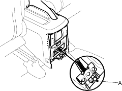
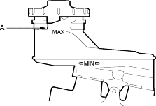
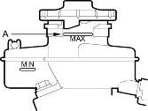

- Tighten the adjusting nut (A) until the parking brakes drag slightly when the rear wheels are turned.

- Release the parking brake lever fully, and check that the parking brakes do not drag when the rear wheels are turned. Readjust if necessary.
- Make sure the parking brakes are fully applied when the parking brake lever is pulled up fully.
- Reinstall the console cover.
- Do not reuse the drained fluid.
- Always use Genuine Honda DOT 3 Brake Fluid. Using a non-Honda brake fluid can cause corrosion and decrease the life of the system.
- Make sure no dirt or other foreign matter is allowed to contaminate the brake fluid.
- Do not spill brake fluid on the vehicle; it may damage the paint; if brake fluid does contact the paint, wash it off immediately with water.
- The reservoir on the master cylinder must be at the MAX (upper) level mark at the start of the bleeding procedure and checked after bleeding each brake calliper. Add fluid as required.
Conventional Method
- Make sure the brake fluid level in the reservoir is at the MAX (upper) level line (A).
4-door

5-door
